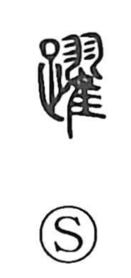

躍

Uncategorized
Kun: odoru | On: yaku
to leap ・ to jump ・ swift ・ to rise
Explanation
A phono-semantic character: 足 provides the sense of legs and movement, while 翟, which depicts a bird lifting its wings to take flight, supplies the sound. The same phonetic appears in 曜 and 耀. In early usage, 躍 evokes an animal raising its legs to spring upward, which gives the core meanings “to leap, jump,” and by extension “swift” and “to rise,” as seen in compounds like 跳躍.